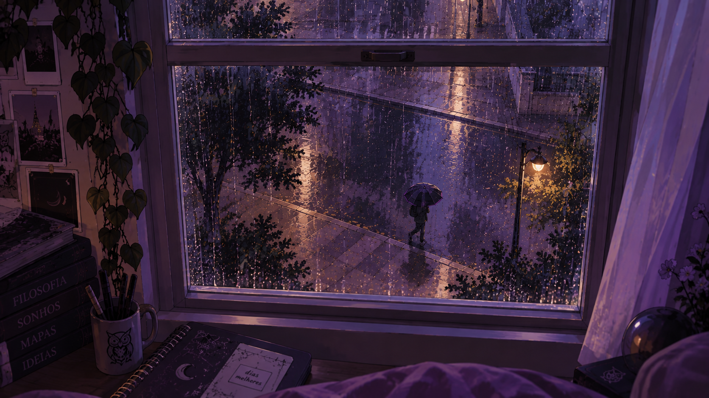
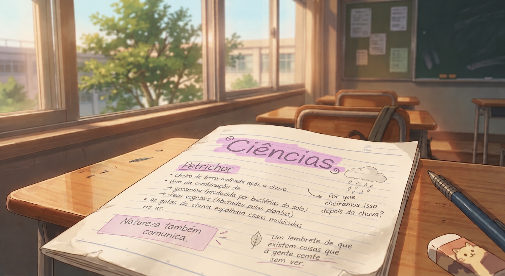
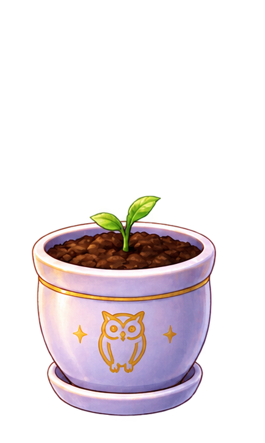

Tem cheiros que chegam antes da lembrança.
Terra molhada é um deles.
Hoje, na aula de Ciências, descobri que isso tem nome: petricor.
Anotei no caderno.
Do lado de fora, não estava chovendo.
arco 2 · anotação 02
A previsão dizia céu limpo. Meu caderno discordou.

Tem cheiros que chegam antes da lembrança.
Terra molhada é um deles.
Hoje, na aula de Ciências, descobri que isso tem nome: petricor.
Anotei no caderno.
Do lado de fora, não estava chovendo.
aula de Ciências · 10h43
O som começou antes da primeira gota. Lá fora, o céu continuava claro.

Aí eu ouvi uma gota.
Olhei para a janela.
Nada.
Ping.
— Tá de brincadeira...
Encontre as gotas impossíveis.Cada uma revela o que estava por baixo da página.
0 de 4 fragmentos revelados.
Fiquei olhando para a página.
Aquilo não era tinta borrada.
E definitivamente não estava ali antes.
item encontrado
Um fragmento apareceu no caderno de Sofia durante a aula de Ciências.
Passei o resto da aula tentando não olhar para o caderno.
Funcionou muito bem.
Se “muito bem” significar aproximadamente sete minutos.
Mais tarde, o caderno continuava na mochila.
Eu tentei não pensar nele.
Também não funcionou.
Abri o notebook.
o que fazer agora?
rastros · investigação opcional
Escolha até três termos. As respostas aparecem aqui conforme Sofia pesquisa.
Nenhum termo selecionado.
Nenhuma busca ainda.
conexão encontrada
O fragmento parece ter alguma relação com um antigo pensador da cidade.
Tales?— Claro.
Porque uma página impossível aparecer no meu caderno não era específica o bastante.
nova pista
O fragmento parece estar ligado a um pensador da antiga cidade de Mileto. A presença recorrente da água pode ser importante.

novo item para a sala
Parece estar com sede.
Fechei o notebook.
Talvez aquilo pudesse esperar.
Talvez.
Foi quando eu percebi o envelope.
Li de novo.
Depois uma terceira vez.
Não melhorou.
— “Atravessar as fronteiras do tempo e do pensamento.”
Certo.
Super normal.
documento guardado
O convite foi adicionado ao Inventário da Missão.